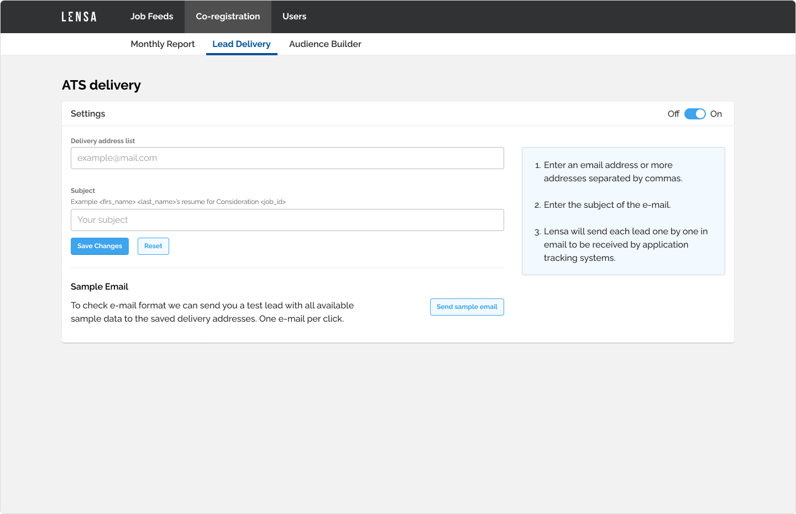
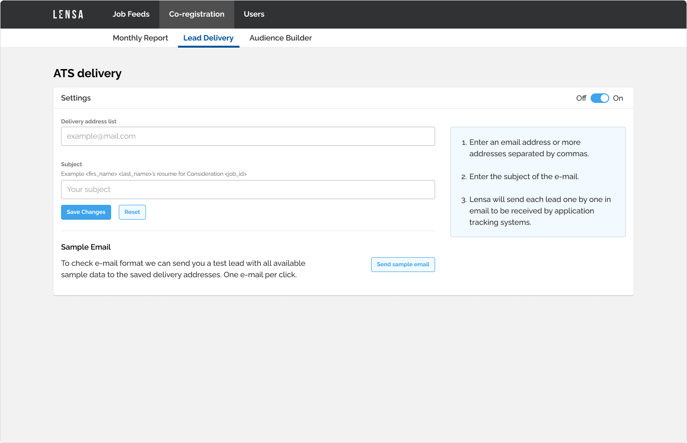

Lensa
Lensa empowering job seekers to make their best career decisions by building data-driven intelligence that supports their goals, skills, and needs. As a UX/UI designer at Lensa, my job was to design new features, create and maintain the design system.
Team
2 UX/UI designers, several development teams working mostly with front-end technologies.
Admin interface for partners
Problem
Professional partners can buy leads from Lensa to further process them. Partners were managing these leads through email with account managers, which was a bit slow and inconvenient.
Tasks
- Create an admin interface where partners could manage their feeds
- Create an admin interface where partners could send quotes to our account managers
Constraints
Our API was not 100% complete, so some of the features were not possible to finish until the first launch.
Conclusion
Partners could manage their feeds through the admin interface which drastically freed up time for the account managers. The feature list were extended later on.

 



Mobile onboarding flow
Problem
Our onboarding flow was outdated regarding functionalities and design. We wanted to align it with our new brand and provide a better UX to achieve higher conversion rates throughout the onboarding flow.
Tasks
- Redesign the onboarding flow visually
- Align it with the new brand and design system
- Conduct A/B tests and iterate on the designs
Constraints
Multiple steps can affect the conversion rate negatively.
Conclusion
The first version performed worse than the older version of the onboarding. By adjusting content ratio, contrast, etc. we managed to reach a higher conversion rate than ever before.

Company page
Problem
Job seekers had to browse elsewhere if they wanted to find out more about a given company. By providing information about the companies we could increase their time on the site and prevent them from browsing away.
Tasks
- Create a view where the job seekers could view info about a given company
- Display the related information in an understandable way
Constraints
Some of our company information was incomplete. We had to solve that the page would provide meaningful information from minimal data.
Conclusion
As we received more information about the companies, we could add more features and help our users make better decisions.